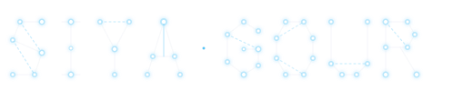
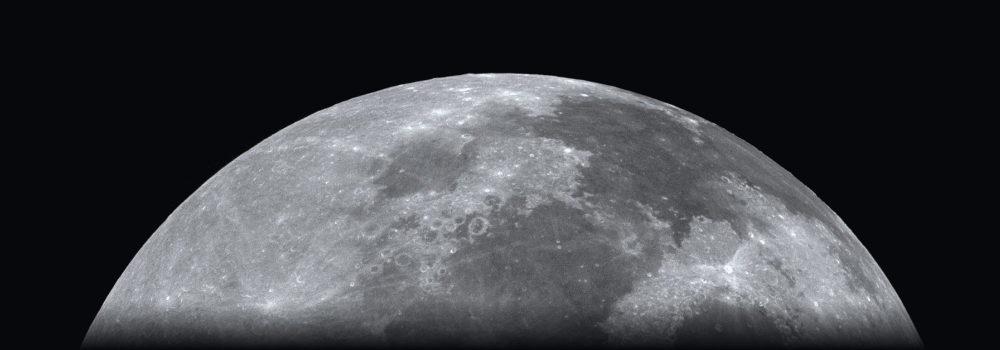

Siya Gour

Computer Science Student | Aspiring Technical Product Manager
I'm a computer science student interested in technology, thoughtful products and solving real-world problems. I enjoy exploring ideas, understanding user needs and collaborating to turn concepts into practical solutions.
Who is she?
A curious mind,
exploring the possibilities
of technology.
I'm a computer science student interested in how technology can solve real-world problems and make a meaningful difference in people's lives.
I enjoy exploring ideas, understanding people and thinking about how those ideas can become useful products.
Currently exploring AI/ML, product thinking and the intersection of technology and human experience.
Projects
Eight astronomical phases tracing project evolution from inception to future milestones.
Skills
Product & Strategy
Product ThinkingUser ResearchProblem FramingWireframingUser Flow DesignUX ThinkingFeature IdeationTeam Coordination
Programming
CC++PythonSQLHTMLCSSJavaScript
Tools & Platforms
GitGitHubVS CodeGoogle AntigravityGoogle ColabJupyter NotebookFigmaCanvaStreamlitFastAPI
Technologies & Concepts Explored
ReactComputer VisionMultimodal AIQLoRAModel Fine-tuningGeospatial Technologies
Project-based exposure, including AI-assisted implementation and experimentation.
Hackathons
Compact mission-log entries of hackathon standings and leadership outcomes.
Still exploring. Always building.
Open to technical product management internships, AI/ML initiatives, and student collaborations.
